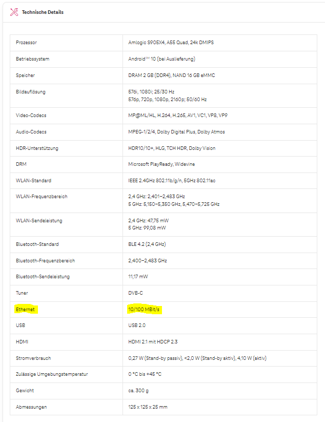

Hallo!
Ich habe leider die neue TV-Box und ein Problem mit den Aufnahmen:
Es werden nicht alle Aufnahmen in "Meine Inhalte" angezeigt.
z.B. Ich nehme einen Tatort aus dem Jahr 1986 auf. Sobald ich dann einen Tatort aus einer anderen Staffel der jünger ist aufnehmen, oder ansehen möchte, als der, der bereits aufgenommen wurde, sieht man diesen nicht mehr. Nur noch die Aufnahmen die vor 1986 sind.
Hat jemand eine Erklärung dafür?
lg Karl
Bearbeitet von KarlRGuten Morgen Karl,
Antwort habe ich leider kein, nur mehr oder weniger ein ähnliches Problem - die Übersicht der aufgenommenen Sendungen ist leider, sagen wir einmal, suboptimal.
Was mir aufgefallen ist - wenn ich mehrere Sendungen aus der gleichen "Staffel" aufnehme, als 2 verschiedene Tatort (beliebige Sendung) Sendungen, dann muss ich in meinen Aufnahmen auf die angezeigte Tatort Sendung gehen, diese "öffnen" (=anklicken) und dann bekomme ich eine Übersicht über weitere aufgenommen Tatort Sendungen.
Das finde ich nicht wirklich berauschend - ich sehe zwar in der Übersicht, dass ich einen Tatort (beliebige Sendung) aufgenommen habe, aber nicht automatisch welchen...
Wenn es dann ums Löschen von einzelnen Folgen/Sendungen geht, dann wirds überhaupt spassig....manchmal löscht die Box (wie gewünscht) aufgenommene Sendungen, dann wieder nicht - es ist einfach ein ewiges Hin und Her.
Hallo,
Leider habe ich seit einigen Tagen das gleiche Problem. 3 Sendungen mit gleichem Titel von verschiedenen Sendern aufgenommen und nur eine wird unter meine Aufnahmen angezeigt. Ein Anruf bei der Hotline brachte leider nur das übliche Ergebnis: Wird weitergeleitet. Ich füge diese Aufnahmen daher zur Merkliste dazu. Es wird zwar alles noch unübersichtlicher aber ich finde die Aufnahmen wenigstens.
LG
Am 23.1.2023 um 21:02 schrieb KarlR:Hallo!
Ich habe leider die neue TV-Box und ein Problem mit den Aufnahmen:
Es werden nicht alle Aufnahmen in "Meine Inhalte" angezeigt.
z.B. Ich nehme einen Tatort aus dem Jahr 1986 auf. Sobald ich dann einen Tatort aus einer anderen Staffel der jünger ist aufnehmen, oder ansehen möchte, als der, der bereits aufgenommen wurde, sieht man diesen nicht mehr. Nur noch die Aufnahmen die vor 1986 sind.
Hat jemand eine Erklärung dafür?
lg Karl
Geht mir ähnlich. Magenta meint seit zwei Wochen, dass sie dran arbeiten. Entschädigung ist dafür auch nicht vorgesehen. Ich lass mich nimmer frotzeln. Morgen frag ich nochmal nach und dann schalte ich Konsumentenschutz ein.
Ich habe leider auch diese TV-Schachtel und nur 4 Aufnahmen unter ,,Meine Inhalte''.
Der Witz dabei ist dass der Speicher fast voll angezeigt wird, weil "Weiterschauen ....'' keines der Sendungen gelöscht werden kann. Für diesen nicht mehr endenden Schwachsinn gibt es keine Lösung - die Einzige die ich sehe ist in naher Zukunft TV zu kündigen.
Es hat sich nichts gebessert, dieses letzte Update war Laborkosmetik und ist wahrscheinlich nur unter dem Mikroskop zu bemerken.
Da hat man ein Kabel von Magenta und soll TV streamen, weil diese TV-Schachtel kein Kabel kann und was wenn man kein Netzkabel für diese TV-Schachtel hat? Soll man da die Wände aufreißen und welche legen?
Was für ein Schildbürger-Konzern 🙈🔨🙈🔨🙈🔨🙈🔨🙈🔨
Eine Box die kein Magentakabel kann, ich kann es nicht glauben??????? Wir fliegen zum Mars und können nach fast 100 Jahren - erste Bildübertragung - kein Fernsehen mehr. Der Mensch, oder besser Magenta entwickelt sich zurück, das nennt sich <<Degeneration>>
Habe mal den Internet - Speed mit der Box gemessen, einmal per Streaming und einmal per Netzwerkkabel.
Eine absolute Frechheit!
Per Streaming kann ich mit meiner 300Mbit/s Leitung per WLAN ( 5m von der Box entfernt) nur. zwischen 45 - 55 Mbit/s messen, dann mit dem und das bei einer 300 Mbit/s Leitung, sage und schreibe nur 65 Mbit/s.
Diese Box ist nicht mal in der Lagen ein Signal mit 300 Mbit/s zu verarbeiten. Mit Streaming und Direktanschluss, so was von langsam ... das man kaum Fernsehen kann, immer wieder Übertragungsabrisse!
Jedes andere Gerät das ich per WLAN aus dieser Entfernung von 5m habe, empfängt 2/3 des tatsächlichen Speed meiner Leitung - die gehören verklagt!
Hi @Nanotrit ,
die Magenta TV Box kann nur maximal 100 Mbit/s im Download und 10 Mbit/s im Upload verarbeiten. Schau mal hier: 
Quelle: https://www.magenta.at/tv/tv-box
Weshalb denkst du ist es erforderlich, dass die TV Box mehr Bandbreite empfangen sollte? HD Inhalte brauchen bis zu 5 Mbit/s im Download und UHD bis zu 25 MBit/s.
Btw: wenn du nach wie vor Probleme mit deiner TV Box hast, kläre das am besten mit unseren Techniker*innen unter 0676 200 7777 (täglich 8.00 bis 22.00 Uhr).
Magentastische Grüße JD.
vor einer Stunde schrieb Jonathan Dorian:Hi @Nanotrit ,
die Magenta TV Box kann nur maximal 100 Mbit/s im Download und 10 Mbit/s im Upload verarbeiten. Schau mal hier:
Weshalb denkst du ist es erforderlich, dass die TV Box mehr Bandbreite empfangen sollte? HD Inhalte brauchen bis zu 5 Mbit/s im Download und UHD bis zu 25 MBit/s.
Btw: wenn du nach wie vor Probleme mit deiner TV Box hast, kläre das am besten mit unseren Techniker*innen unter 0676 200 7777 (täglich 8.00 bis 22.00 Uhr).
Magentastische Grüße JD.
Ich denke nicht, dass es erforderlich ist, ich weiß es. Weil bei höherem Speed, bekanntlicherweise wesentlich mehr Daten, schnell transportiert werden können. Das kann jeder externe IT-Fachmann bestätigen. Diese Angabe mit 5Mbit/s ist reine Träumerei und auf einem 55" TV weder flüssig darstellbar und nicht praktikabel.
5 -10 Mbit/s hatte ich auch schon und der Kreis dreht sich und dreht sich solange bis ich abschalte. 5 Mbit/s reich max auf nem Comutermonitor wo nicht die Auflösung/Datenmenge wie bei einem 55" TV übertragen werden muss.
Ich sag dir mal ein Beispiel; mit der Apple-TV 4K geht das per Streaming (Magenta TV App) Zack Zack beim Umschalten auf ein anderes Programm, genau so der TV-Guide. Wenn du Apple-TV 4K hast, dann probierst du das mal. Auf Apple TV 4k kommen von den 300Mbit/s via WLAN noch bis 120 Mbit/s an - so schaut's aus.
Um mit Apple TV 4k Fernzusehen, scheitert es nur an der Fernbedienung die zum Fernsehen bzw. Bedienen der Magenta-App Oberfläche nicht optimal ausgelegt ist.
Der Empfang mit Apple-Tv 4k ist schnell und stabil, ihr müsst das nur mal probieren, die alte Box konnte das.
Natürlich kann ich das Coax-Antennenkabel an den TV anstecken, aber dann werden logischerweise nur mehr freie Sender empfangen,
weil nur die Box verschlüsselte Sender entschlüsselt die zu meinem Produkt gehören.
Wenn du mir solche Dinge zitierst, zeigt es mir nur, dass du mit Datenübertragung nicht viel Erfahrung hast - das ist jetzt nicht persönlich gemeint, sondern meine Meinung zu deinem Statement.
Ich hingegen habe sehr viel mit Rechnern zu tun ...
Die erste brauchbare Realisierung des wichtigen Schrittes des Prozesses Fernsehen, der Bildzerlegung, erfand 1883 Paul Nipkow, das muss ich wohl nicht weiter kommentieren.
P.S.:
Ein Techniker nützt bei dieser Box nichts, weil die TV-Box das Problem ist. Ich bin seit einer Ewigkeit Kunde, zuerst UPC und jetzt Magenta, aber so was habe ich noch nie erlebt. Die Entertain-Box konnte das sehr gut und war sogar fähig über das Coax-Antennenkabel zu empfangen - diese neue TV-
Box kann das auch nicht - und WLAN war nur für Aufnahmen und Replay notwendig.
Bearbeitet von NanotritIst WLAN für Media Streaming geeignet?
Nicht so schnell wie auf der Packung angegeben
Ob Mobiltelefon, Tablet oder Notebook — so ziemlich jedes Gerät kann sich heute drahtlos mit einem Netzwerk verbinden. Auch Heimkino-Geräte sind mittlerweile kaum noch ohne WLAN erhältlich. AV-Receiver werden per App gesteuert und erhalten Musik direkt von einem Streaming- Anbieter. Fernseher oder Blu-ray-Player, die nicht wenigstens eine YouTube-App anbietet, muss man schon suchen.
Auch Filme werden durch das heimische Netzwerk übertragen. Sei es vom eigenen NAS-Medienserver oder von Internet-Diensten wie Amazon Prime Video oder Netflix. Die Zahl der Geräte, die Streaming-Angebote wiedergeben können, sind inzwischen kaum noch zu zählen: Amazon Fire TV, Apple TV, Google Chromecast aber auch Kodi auf fast beliebiger Hardware sind nur die
bekanntesten Vertreter.
Sie alle haben zwei Dinge gemeinsam:
Sieverbindensich—gerneperWLAN–mitdem heimischen Netzwerk, um eine Internetverbindung herzustellen.
SiemüsseneineMengeDatendurchdasNetzwerk ziehen, um Filme in guter Qualität wiedergeben zu können.
Und genau da beißt sich die Katze in den Schwanz. WLAN, wie wir es aktuell zur Verfügung haben, ist für Filme nur bedingt ausgelegt.
Kostenlose Heimkinobau-Checkliste:
Der einfache Weg zum eigenen Heimkino Schritt für Schritt erklärt.
Gleich vorweg: Ich spreche hier von Filmmaterial, das zumindest auf den ersten Blick nicht sofort von einer Blu- ray zu unterscheiden ist — also 1080p Full HD und 5.1- Sound. Genau genommen hat das noch lange nichts mit der Qualität einer Blu-ray zu tun, aber zumindest kann man sich Filme in dieser Auflösung meist ohne Schmerzen ansehen.
Was ist nun das Problem mit WLAN? Ein durchschnittlicher Film in akzeptabler Qualität hat eine Datenrate von rund 10 Kbit/s (Kilobit pro Sekunde). Kein Problem also für ein WLAN, das in der Regel 100 Mbit/s
(Megabit pro Sekunde) schafft, sollte man meinen. Rein rechnerisch mag das stimmen. Aber der Schein der heilen WLAN-Welt trügt.
WLAN bremst aus
WLAN ist eine stark verlustbehaftete Übertragungstechnik. Verluste entstehen zwangsläufig, weil die Daten einfach durch die Luft flattern. Abhängig von
der Stärke und Stabilität des Signals,
der zu überbrückenden Strecke und Hindernissen zwischen Sender und Empfänger
fallen diese Verluste stärker oder schwächer aus, aber sie sind aus Prinzip immer vorhanden.
An sich ist das erstmal nicht schlimm, weil Netzwerktechnik so ausgelegt ist, dass fehlerhaft übertragene Daten einfach nochmal übertragen werden — so lange bis sie richtig angekommen sind. Das bedeutet aber auch, dass wesentlich mehr Daten zu senden und zu empfangen sind, als tatsächlich benötigt werden.
Gehen nur 50% der Daten verloren, müssen also schon doppelt so viele Daten übertragen werden, wovon die Hälfte Ausschuss ist. Nicht gerade sehr effizient, aber so funktioniert kabellose Datenübertragung nun mal.
WLAN ist nicht so schnell wie angegeben
Von vorneherein kommt aber hinzu, dass die am WLAN- Router angegebenen 100 Mbit/s im Echtbetrieb nicht vorkommen. Auch der Empfänger muss diese Geschwindigkeit unterstützen und nutzen — die wenigsten machen das.
Greifen mehrere Geräte auf das mobile Netzwerk zu, müssen sie sich die Datenrate teilen. Der Router kann nur insgesamt 100 Mbit/s senden — sendet er an mehrere Geräte gleichzeitig, verteilt sich das entsprechend. Dabei muss an einem anderen Gerät nicht mal unbedingt ein dicker Download laufen — oft reicht es schon, aktiv im Internet zu surfen.
Im eigenen Interesse sollte ein WLAN zudem stark verschlüsselt sein. Für die Verschlüsselung wird ebenfalls eine Menge Zeit benötigt — unverschlüsselte Verbindungen sind schneller. Aber diesen Verlust muss man in Kauf nehmen.
Auswirkungen auf die Wiedergabe
Die Geschwindigkeit eines WLANs mag zwar rein rechnerisch locker auch für größere Videos ausreichen, in der Praxis geht diese Rechnung aber häufig nicht auf. Oft kommen Videos einfach nicht schnell genug beim Empfänger an.
Das Resultat sind Unterbrechungen in der Wiedergabe: Die Software muss das Video von Zeit zu Zeit puffern, um
wieder genug Daten für ein paar weitere Sekunden zu haben. Unter diesen Bedingungen will man sich normalerweise keinen Film ansehen.
Schlechtere Qualität beim Streaming
Anbieter wie Amazon oder Netflix haben darüber hinaus ein weiteres Problem: Nicht nur das hausinterne WLAN kann langsam sein, sondern viel wahrscheinlicher noch die Internetverbindung. Streaming-Anbieter können es sich nicht erlauben, stockende Videos auszuliefern — die negativen Rückmeldungen der zahlenden Kunden würden ins Unermessliche steigen. Andererseits haben sie keine Kontrolle darüber, mit welcher Technik die Kunden einen Film ansehen. Damit müssen sie irgendwie umgehen, um den Anwender zufriedenzustellen.
Hierzu misst die App, die einen Film streamt, permanent die aktuell mögliche Datenübertragungsrate. Sie prüft ganz einfach, wie schnell die Daten ankommen. Diese Informationen teilt sie dem Streaming-Server regelmäßig mit, der darauf reagieren kann:
Ist die mögliche Datenübertragungsrate niedrig, wird der Film stärker komprimiert (die Bild- und Tonqualität sinkt).
Hat der Film immer noch mehr Kilobit pro Sekunde, als durch die Leitung passen, wird bei Bedarf auch die Auflösung reduziert.
Kann der Film wieder schneller als notwendig vorausgeladen werden, wird die Qualität nach einer gewissen Zeit erhöht, um ein besseres Ergebnis zu bekommen.
Durch diese Vorgehensweise ist garantiert, dass Streaming selbst auf einem Mobiltelefon mit schlechter Verbindung flüssig funktioniert — nur eben in entsprechend bescheidener Qualität.
Die selbe Technik, die dafür sorgt, dass Videos auch bei einer langsamen Internetverbindung flüssig ausgeliefert werden, beschneidet auch die Qualität, wenn zwar das Internet rasend schnell ist, aber das abspielende Gerät per WLAN mit dem Router verbunden ist. Die Streaming- App kann zwar feststellen, dass die Verbindung langsam ist, sie kann aber nicht wissen, ob die Internetverbindung oder das WLAN der Flaschenhals ist.
Den Flaschenhals dehnen
Um Streaming in wirklich hoher Qualität zu nutzen, ist es also wichtig, keinen Flaschenhals zu haben — jedenfalls keinen allzu engen.
An der Internetverbindung kann man meistens nichts ändern. Die ist im jeweiligen Wohnort eben so, wie sie ist. (Und in Deutschland heißt das leider oft: laaangsaaam!) Als Daumenregel kann man nur sagen, dass ein Kabelanschluss (zum Beispiel Vodafone bzw. ehemals
UnityMedia bzw. ehemals Kabel BW oder Kabel Deutschland) meistens schneller ist als DSL, vor allem in ländlichen Gegenden. Allerdings ist ein Kabelanschluss nicht überall einfach so möglich.
Wenn die Internetverbindung lahmt, hilft nur, sie nicht so stark zu belasten. Downloads, YouTube, Internetradio, Skype, Telefonie per VoIP oder aktives Surfen im Internet sollten (in dieser Reihenfolge) so weit es geht eingestellt werden.
Der andere potentiellen Flaschenhals ist das WLAN.
Wann immer es möglich ist, sollte ein Abspielgerät per Netzwerkkabel mit dem Router verbunden werden! Damit ist dieser Flaschenhals beseitigt.
Haltet Euch vor Augen, dass WLAN eine Technik für mobile Geräte ist: damit sich ein Gerät trotz Internetverbindung frei im Raum bewegen kann. Muss sich ein AV-Receiver, eine Spielekonsole oder ein Fire TV frei im Raum bewegen? Nö. Also Kabel dran. Punkt.
Inzwischen recherchiert, verwenden immer mehr Leute die Magenta-TV.App in Verbindung mit der Apple-TV 4k Box, weil die WLAN 5GHz Connection absolute Spitze ist und Stabil.
Sender werden schnell umgeschaltet, Bild und Ton ist sofort zu sehen/hören und der TV Guide ist auch gleich sicht- und bedienbar.
Die Apple-TV 4k Box ist mit WLAN 5GHz schneller und stabil. Die Magenta TV-Schachtel mit empfohlenem Netzwerkkabel auch nicht schneller als mit WLAN und hat bei mir immer Unterbrechungen - ist so völlig uninteressant.
Ich habe eine eine 300Mbit/s Leitung und per WLAN mit 5GHz kommt in 5-7m Entfernung am Apple-TV 4K noch bis zu 120 Mbit/s max. an, was für eine flüssige Übertragung sorgt und für schnelles umschalten. Wenn ich Apple-TV 4K auch noch am Kabel hatte - was ich nicht brauche - hätte ich volle 300Mbit/s drauf.
Die sogenannte Magenta TV-Box schafft unter selben Bedingungen per WLAN mit 5GHz 45-55 Mbit/s und direkt am Netzwerkkabel auch nicht viel mehr ca. 65 Mbit/s und ist Hardware- und Softwarebedingt auch noch sehr sehr träge.
Diese Laborwerte von wegen 5Mbit/s und dass dies Für Full HD reicht ist ein Witz, zumal auf den meisten HD-Sendern SEHR VIELE uralt-Sendungen und Serien ausgestrahlt werden. Aber das ist eine andere Geschichte ...
Wenn 5Mbit/s reichen würden, warum warte ich beim umschalten ca. 5sek. bis ein Bild ohne InfoBalken da ist?? Und das bei 45Mbit/s?? Das Internet ist OK, das flutscht; aber dann war's schon alles. An dem liegt's nicht.
Da braucht's keinen Techniker.
Wer Apple-TV 4k hat kann das gerne probieren und wird sehen, dass es ein riesen Unterschied ist. Einen Haken hat die Apple-TV 4K Box allerdings und zwar kann man nicht durch die Programme Zappen und hat auch keine Zifferntasten.
Die Zifferntasten bringen eh nix, weil man die Programme nur Favorisieren und nicht nach Ziffernreihenfolge anordnen kann - also 1.2.3.4. ....
(nachträglich recherchiert: es gibt kompatible Fernbedienungen zu Apple-TV 4k mit der man Programme durchzappen könnte. das Problem dabei ist, dass die Magenta TV-APP für Apple-TV 4k kein Zapping kann.)
Man ist also auf die orig. Fernbedienung von Apple angewiesen ...
Die Programme lassen sich mit der Apple Fernbedienung nur vor und zurückschalten und man muss mit OK bestätigen - aber sie ist schnell beim Umschalten; ein Klick und Bild/Ton sind da.
Wer eine Apple-TV Box sein eigen nennen kann ist gesegnet und wer nicht muss halt ein paar Hunderter locker machen, aber man damit kann mehr als Fernsehen.
P.S:.
Wer die Wahrheit nicht verträgt oder wem's nicht passt was da steht, kann's ja löschen ...
Bearbeitet von Nanotrit
Hallo zusammen,
leider sind wir hier vom eigentlichen Thema des Threads abgekommen. Die Aufnahmen sollten bereits im Bereich "meine Inhalte" angezeigt und wiedergegeben werden können. Weitere Infos siehe hier -> https://www.magenta.at/faq/entry/~technische-anfrage~fernsehen~erste-hilfe/~MagentaTV-Update~master .
Magentastische Grüße JD.
{kind=link}